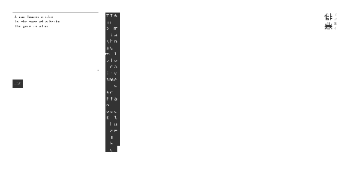
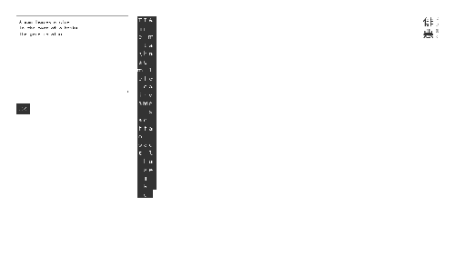

9P1–9S2 · 8.64 · 8.59D · 0.05V
Haiaku (俳悪) is a text converter that rewrites input into top-down, right-to-left fullwidth format reminiscent of haikus. It was built upon the request of a friend. View it here.
Haiaku (俳悪) is a text converter that rewrites input into top-down, right-to-left fullwidth format reminiscent of haikus. It was built upon the request of a friend. View it here.
